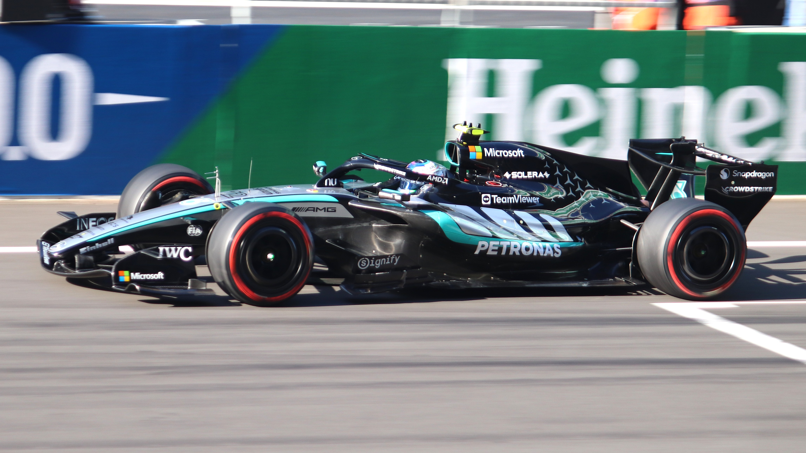
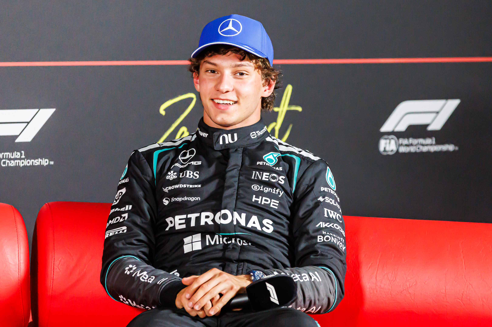

Andrea Kimi Antonelli deixou de ser apenas uma das maiores promessas do automobilismo para escrever seu nome entre os campeões mundiais da Fórmula 1. O piloto construiu uma trajetória de ascensão acelerada, conquistou títulos importantes nas categorias de formação e chegou à Mercedes como substituto de Lewis Hamilton. Em 2026, na segunda temporada como titular, tornou-se o campeão mundial mais jovem da história da categoria.
A conquista representou mais do que um recorde de precocidade. Antonelli encerrou um jejum de 73 anos sem um italiano campeão mundial de Fórmula 1, algo que não acontecia desde Alberto Ascari, em 1953. Aos 20 anos, superou a marca de Sebastian Vettel, que havia conquistado seu primeiro título aos 23 anos, em 2010.
O sucesso foi resultado de uma formação iniciada ainda na infância, acompanhada de perto pela Mercedes e marcada por uma sequência de títulos no kart, na Fórmula 4 e na Fórmula Regional. Sua história também mostra como um piloto pode chegar à elite do automobilismo sem disputar todas as categorias tradicionais de acesso.
Quem é Kimi Antonelli
O jovem piloto nasceu em Bolonha, na região da Emília-Romanha, tradicional centro do automobilismo italiano. O contato com as pistas começou cedo, influenciado principalmente pelo pai, Marco Antonelli, piloto de competições de carros esportivos.
Kimi começou no kart aos cinco anos e rapidamente passou das competições locais para torneios nacionais e internacionais. Seu desempenho chamou a atenção da Mercedes, que o incorporou ao programa de desenvolvimento de jovens pilotos em abril de 2019, quando tinha apenas 12 anos.
A ligação com a fabricante alemã foi determinante para sua carreira. Além de oferecer estrutura e acompanhamento esportivo, a Mercedes passou a orientar os passos do italiano pelas categorias de base, preparando sua evolução até a Fórmula 1.
A aposta se mostrou especialmente importante porque Antonelli não seguiu uma trajetória convencional. Depois de dominar campeonatos de formação, saltou diretamente da Fórmula Regional para a Fórmula 2, sem disputar o Campeonato de Fórmula 3 da FIA.
Os primeiros títulos no kart
Antes de ganhar destaque nos monopostos, Antonelli já acumulava resultados expressivos no kartismo europeu.
Em 2019, venceu a WSK Euro Series e a WSK Super Master Series na categoria OK Junior. Também terminou como vice-campeão europeu de kart, reforçando sua posição entre os jovens talentos da modalidade.
No ano seguinte, avançou para a categoria OK e conquistou o Campeonato Europeu de Kart da FIA, além de outro título da WSK Euro Series.
Em 2021, voltou a vencer o Campeonato Europeu da FIA, completando dois títulos consecutivos na categoria.
Essas conquistas foram fundamentais para consolidar sua reputação. O italiano não se destacava apenas pela velocidade em uma volta, mas pela capacidade de competir em diferentes pistas e enfrentar adversários de alto nível desde muito jovem.
Fórmula 4: o domínio que chamou a atenção
A transição para os carros de fórmula começou em 2021, quando Antonelli estreou na Fórmula 4 italiana pela Prema Racing.
Na primeira experiência, disputou nove corridas e conquistou três pódios. O desempenho inicial abriu caminho para uma temporada completa em 2022.
Foi naquele ano que sua carreira ganhou uma nova dimensão. Antonelli conquistou os títulos da Fórmula 4 italiana e da ADAC Fórmula 4, campeonato disputado na Alemanha.
Somando as duas competições, o piloto registrou 22 vitórias, 21 pole positions e 27 pódios, números que demonstraram sua superioridade naquela etapa de formação.
O domínio reforçou a confiança da Mercedes em acelerar sua progressão. Em vez de permanecer por mais temporadas na Fórmula 4, Antonelli avançou rapidamente para uma categoria com carros mais potentes e maior exigência técnica.
Fórmula Regional: dois títulos no mesmo ano
Em 2023, Antonelli passou a disputar a Fórmula Regional, novamente defendendo a Prema Racing.
O italiano iniciou a temporada conquistando o campeonato da Fórmula Regional do Oriente Médio. Depois, confirmou sua evolução ao vencer a Fórmula Regional Europeia, uma das competições de formação mais relevantes para jovens pilotos com perspectiva em chegar à Fórmula 1.
Na campanha europeia, conquistou cinco vitórias e garantiu o campeonato em sua primeira temporada.
A sequência de conquistas colocou Antonelli em uma posição privilegiada dentro do programa de jovens pilotos da Mercedes.
Com títulos no kart, na Fórmula 4 e na Fórmula Regional, o italiano já havia demonstrado capacidade de adaptação a diferentes equipamentos e regulamentos.
O próximo passo, porém, representaria um desafio consideravelmente maior.
A passagem pela Fórmula 2
Em 2024, Antonelli chegou à Fórmula 2 pela Prema Racing. A decisão chamou atenção porque o piloto não havia disputado a Fórmula 3 da FIA, etapa normalmente percorrida pelos principais talentos antes de alcançar a F2.
A temporada apresentou dificuldades. A Prema enfrentou problemas para extrair desempenho do novo carro utilizado no campeonato, e Antonelli precisou lidar com um equipamento que nem sempre permitia disputar as primeiras posições.
Mesmo assim, conseguiu duas vitórias importantes.
A primeira aconteceu na corrida sprint de Silverstone, na Inglaterra, disputada sob chuva. O resultado destacou sua capacidade de controlar o carro em condições de baixa aderência.
A segunda vitória veio na corrida principal do Hungaroring, na Hungria, reforçando sua evolução na categoria.
Antonelli encerrou o campeonato na sexta colocação geral. Embora não tenha disputado o título, os resultados, combinados ao histórico nas categorias anteriores, foram suficientes para sustentar a confiança da Mercedes em seu potencial.
O italiano deixou a Fórmula 2 após uma única temporada e recebeu uma das oportunidades mais importantes do automobilismo mundial.
A escolha da Mercedes para substituir um ícone
A confirmação da saída de Lewis Hamilton da Mercedes para a Ferrari abriu uma vaga de enorme importância na Fórmula 1.
Hamilton havia construído uma trajetória histórica na equipe alemã, conquistando seis títulos mundiais de pilotos com a Mercedes entre 2014 e 2020.
A responsabilidade de escolher seu substituto ficou com a direção comandada por Toto Wolff.
Apesar da pouca experiência de Antonelli em categorias superiores, a Mercedes optou por apostar em um talento desenvolvido dentro de sua própria estrutura.
O anúncio aconteceu durante o fim de semana do Grande Prêmio da Itália de 2024, em Monza, pouco depois de o piloto completar 18 anos.
Naquele mesmo evento, Antonelli participou de seu primeiro treino livre oficial de Fórmula 1. A estreia foi interrompida por um acidente, após apenas algumas voltas, mas o episódio não mudou a decisão da equipe.
Para 2025, Antonelli foi escolhido para dividir a garagem da Mercedes com George Russell.
A estreia na Fórmula 1
Kimi Antonelli estreou oficialmente como piloto titular da Fórmula 1 no Grande Prêmio da Austrália de 2025, em Melbourne.
Com 18 anos, tornou-se o terceiro piloto mais jovem a largar em uma corrida da categoria.
A primeira participação terminou com uma quarta colocação, resultado expressivo para alguém que chegava diretamente da Fórmula 2.
A temporada de estreia apresentou momentos de evolução, mas também dificuldades naturais de adaptação. Antonelli precisou aprender a administrar pneus, compreender os diferentes comportamentos do carro e enfrentar a pressão de competir por uma equipe acostumada a disputar vitórias.
Em maio, conquistou a pole position da corrida sprint do Grande Prêmio de Miami, tornando-se o mais jovem piloto a garantir a primeira posição de largada em uma sessão classificatória da Fórmula 1, considerando os diferentes formatos.
O primeiro pódio em uma corrida principal veio no Grande Prêmio do Canadá, em junho de 2025, quando terminou em terceiro lugar, atrás de George Russell e Max Verstappen.
Na parte final do campeonato, voltou a apresentar resultados importantes. Terminou em segundo no Grande Prêmio de São Paulo, em Interlagos, e em terceiro no Grande Prêmio de Las Vegas.
Antonelli encerrou sua primeira temporada na sétima colocação no Mundial de Pilotos, enquanto a Mercedes terminou em segundo lugar no Campeonato de Construtores.
O ano do primeiro título mundial
A temporada de 2026 transformou definitivamente a carreira de Kimi Antonelli.
Com a entrada de novos regulamentos técnicos na Fórmula 1, a Mercedes apresentou um carro competitivo, e o italiano aproveitou a oportunidade para disputar as primeiras posições de maneira consistente.
Depois de terminar em segundo lugar no Grande Prêmio da Austrália, Antonelli conquistou sua primeira pole position para uma corrida principal no Grande Prêmio da China.
Aos 19 anos, tornou-se o piloto mais jovem a conquistar uma pole position de Grande Prêmio na história da categoria.
No dia seguinte, converteu a primeira posição de largada em sua primeira vitória na Fórmula 1.
O triunfo em Xangai foi seguido por outra conquista no Grande Prêmio do Japão, em Suzuka. Com o resultado, Antonelli assumiu a liderança do Mundial, tornando-se também o piloto mais jovem a ocupar o primeiro lugar do campeonato.
O italiano ampliou a sequência com vitórias em Miami, Canadá e Mônaco, completando cinco triunfos consecutivos nas primeiras cinco corridas que venceu na carreira.
A conquista em Monte Carlo também foi histórica. Antonelli tornou-se o vencedor mais jovem do Grande Prêmio de Mônaco e registrou um Grand Slam, combinação de pole position, vitória, volta mais rápida e liderança de todas as voltas da corrida.
A campanha ainda teve momentos de dificuldade, incluindo um abandono no Grande Prêmio de Barcelona-Catalunha e resultados que permitiram a aproximação dos adversários na classificação.
Uma das atuações mais marcantes aconteceu em Monza, quando venceu o Grande Prêmio da Itália após largar da 19ª posição. A recuperação diante da torcida italiana reforçou sua capacidade de competir em situações desfavoráveis.
O título mundial foi assegurado em 1º de novembro de 2026, no Grande Prêmio da Cidade do México.
Antonelli terminou a corrida em terceiro lugar, atrás de Max Verstappen e Lewis Hamilton, resultado suficiente para conquistar matematicamente o Mundial de Pilotos com quatro etapas de antecedência.
Assim, aos 20 anos, tornou-se o campeão mundial mais jovem da história da Fórmula 1.
Todas as vitórias em 2026:
- 1. GP da China
- 2. GP do Japão
- 3. GP de Miami
- 4. GP do Canadá
- 5. GP de Mônaco
- 6. GP da Bélgica
- 7. GP da Itália
- 8. GP da Espanha
- 9. GP dos Estados Unidos
Além das nove vitórias em corridas principais, Antonelli também venceu a corrida sprint do Grande Prêmio da Grã-Bretanha, disputada em Silverstone, em 4 de julho de 2026. O triunfo é contabilizado separadamente nas estatísticas oficiais da Fórmula 1.
O desempenho nas classificações também foi decisivo para a campanha. Antonelli acumulou sete pole positions em Grandes Prêmios até garantir o campeonato mundial.
- 1. GP da China
- 2. GP do Japão
- 3. GP de Miami
- 4. GP de Mônaco
- 5. GP da Grã-Bretanha
- 6. GP da Bélgica
- 7. GP dos Estados Unidos
Os números da campanha do título mundial:
- Vitórias em Grandes Prêmios: 9
- Pole positions: 7
- Pódios: 16
- Vitória em corrida sprint: 1
- Pontos conquistados: 380
- Grandes Prêmios disputados: 19
Estatísticas até o GP da Cidade do México, em 1º de novembro de 2026.
A campanha demonstra que o título de Antonelli não foi resultado de uma única sequência de bons resultados. O italiano venceu em circuitos de características diferentes, combinou velocidade em classificação com desempenho nas corridas e conseguiu manter vantagem no campeonato mesmo durante os momentos mais difíceis da temporada.
O contrato com a Mercedes
A conquista do Mundial de Fórmula 1 de 2026 pode representar apenas o começo de uma longa história de Kimi Antonelli na categoria. Aos 20 anos, o italiano conquistou seu primeiro título logo na segunda temporada como titular da Mercedes, equipe que apostou em seu talento quando ele ainda competia no kartismo e que agora vê seu investimento transformado em uma conquista histórica.
A relação entre Antonelli e a Mercedes começou em 2019, com sua entrada no programa de desenvolvimento de jovens pilotos. Desde então, a fabricante alemã acompanhou sua evolução nas categorias de base, até promovê-lo à Fórmula 1 em 2025 para ocupar a vaga deixada por Lewis Hamilton.
A permanência de Antonelli na Mercedes se estende até a temporada de 2027, que será sua terceira como titular da equipe.
O vínculo, entretanto, pode representar um projeto ainda mais duradouro. Após a conquista do título mundial, Toto Wolff, chefe da Mercedes, destacou a relação de confiança construída durante os anos de formação do piloto e demonstrou acreditar em sua capacidade de conquistar outros campeonatos.
Agora, a equipe tem em seu próprio programa de formação um campeão capaz de representar uma nova geração.
Embora a permanência além de 2027 dependa das condições contratuais e das decisões futuras, a combinação entre juventude, resultados e confiança da Mercedes cria perspectivas de continuidade.
Antonelli já alcançou o objetivo máximo da Fórmula 1, mas ainda está no início de sua carreira. Com duas temporadas completas na categoria e um título mundial conquistado, o italiano tem pela frente a oportunidade de construir uma trajetória de longa duração, buscar novos campeonatos e ampliar seu legado com a equipe que o acompanhou desde o kartismo.
A questão deixa de ser apenas até onde Kimi Antonelli pode chegar. Depois de se tornar campeão mundial aos 20 anos, o desafio passa a ser transformar a conquista precoce em uma carreira marcada pela regularidade, pelas vitórias e pela possibilidade de construir uma dinastia na Mercedes.
Os recordes históricos
A rápida ascensão do italiano foi acompanhada por marcas importantes na categoria.
Entre as conquistas estão:
- 1. Campeão mundial mais jovem da Fórmula 1
- 2. Piloto mais jovem a conquistar uma pole position para um Grande Prêmio, no GP da China.
- 3. Piloto mais jovem a liderar o Campeonato Mundial.
- 4. Vencedor mais jovem do Grande Prêmio de Mônaco.
- 5. Piloto mais jovem a conquistar um Grand Slam na Fórmula 1.
- 6. Primeiro piloto a transformar suas três primeiras pole positions de Grandes Prêmios em vitórias.
A numeração escolhida
O número 12 tornou-se uma marca importante na identidade esportiva de Antonelli.
O piloto utilizou essa numeração durante sua trajetória nas categorias de base, inclusive nas campanhas vitoriosas da Fórmula 4 e da Fórmula Regional.
A escolha também tem uma ligação com Ayrton Senna, um dos maiores ídolos do italiano.
Senna competiu com o número 12 na Lotus entre 1985 e 1987 e voltou a utilizá-lo em 1988, quando conquistou seu primeiro título mundial pela McLaren.
Antonelli reconheceu publicamente a influência do brasileiro na escolha e também destacou a importância pessoal do número, associado aos primeiros títulos de sua carreira e à idade em que ingressou no programa de desenvolvimento da Mercedes.
Após conquistar o Mundial de 2026, o italiano manifestou a intenção de continuar utilizando o 12, mesmo tendo direito de adotar o número 1 reservado ao campeão mundial.
O legado para a Fórmula 1 italiana
O campeonato de 2026 colocou Antonelli em um grupo extremamente restrito de pilotos italianos que conquistaram o Mundial de Fórmula 1.
Antes dele, apenas Giuseppe Farina, campeão da temporada inaugural de 1950, e Alberto Ascari, vencedor em 1952 e 1953, haviam alcançado essa posição.
A Itália sempre teve uma relação profunda com a Fórmula 1, principalmente por meio da Ferrari, de Monza e da tradição de suas equipes e fabricantes. Entretanto, durante décadas, nenhum piloto do país conseguiu repetir o sucesso de Farina e Ascari no Campeonato Mundial.
Antonelli rompeu essa sequência e colocou novamente um italiano no topo da classificação.
O título também reforçou a importância dos programas de desenvolvimento de jovens talentos. A Mercedes identificou o potencial do piloto quando ele ainda competia no kart, acompanhou sua formação e assumiu o risco de promovê-lo diretamente à Fórmula 1 depois de apenas uma temporada na Fórmula 2.
A decisão apresentou dificuldades no primeiro ano, mas encontrou sua recompensa esportiva na temporada seguinte.
A trajetória do italiano também representa uma mudança de geração no automobilismo. Antonelli chegou à principal categoria com pouca experiência nas divisões imediatamente inferiores, enfrentou a pressão de substituir um heptacampeão mundial e precisou amadurecer enquanto competia contra pilotos já consagrados.
De Bolonha aos circuitos mais importantes do planeta, Antonelli percorreu um caminho excepcionalmente rápido até o título. Seu nome passou a integrar a história da categoria não apenas pelos recordes de juventude, mas por uma conquista que o colocou definitivamente entre os campeões mundiais do automobilismo.